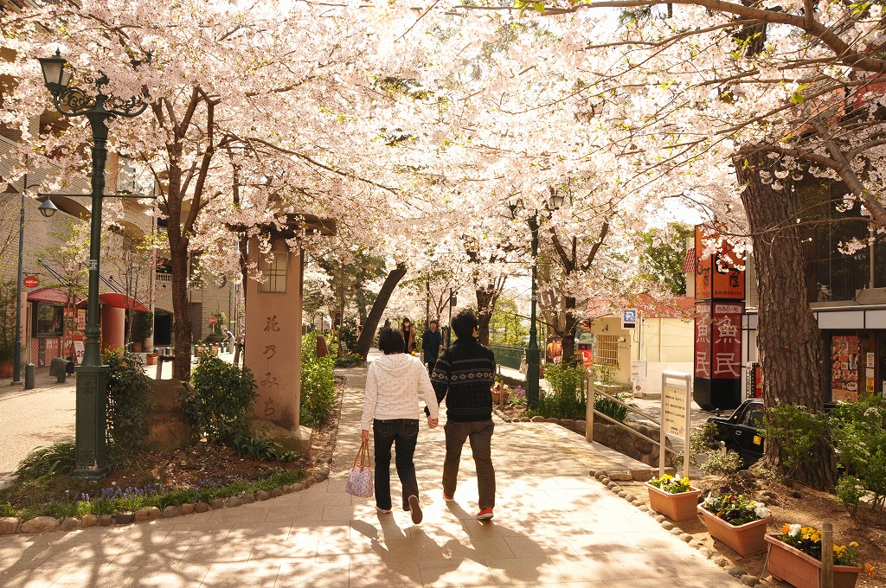

※デザイン確認用のモックです。記事・写真説明はすべて架空のサンプルです
① トップページ：今日の宝塚トピック＋今日の宝塚フォト（コンパクト・並列表示）
※「今日の宝塚パネル」「クイックアクセス」（既存・変更なし）の直後にこの行が入ります

夏の宝塚
花のみち（サンプル）
写真提供：宝塚市オープンデータ（CC BY 4.0）
※日付（季節）に応じて表示する写真が自動で変わります。今日は6月のため「夏」カテゴリーの写真から選ばれています。
② 市議会ウォッチページ（/category/shigikai.html・手動要約運用）
🏛️ 市議会ウォッチ
本ページの会議要約は、宝塚市議会会議録検索システムの公開情報を基に、人間が内容を確認しながらAIが要約を作成しています。事実のみを記載し、議員の評価・政治的意見・優劣判断は一切行いません。
議員活動サマリー一覧を見る →
③ 議員活動サマリーページ（/giin/<議員slug>.html）
このページは議員本人の公開発言を時系列で整理したものです。活動量のスコア化・ランキング・優劣評価は行いません。
👤
（サンプル）宝塚 太郎 議員
会派：（サンプル会派名）
発言テーマ一覧（時系列）